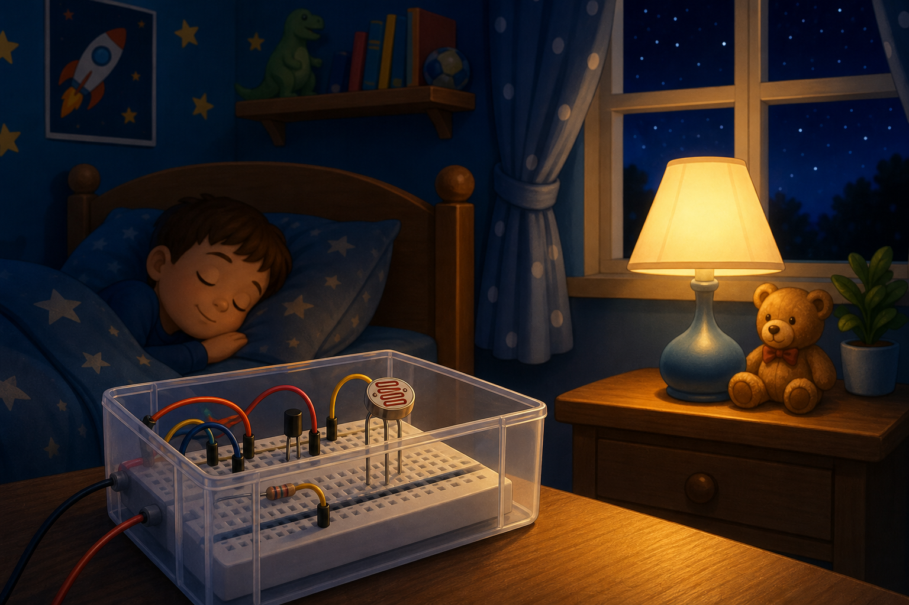
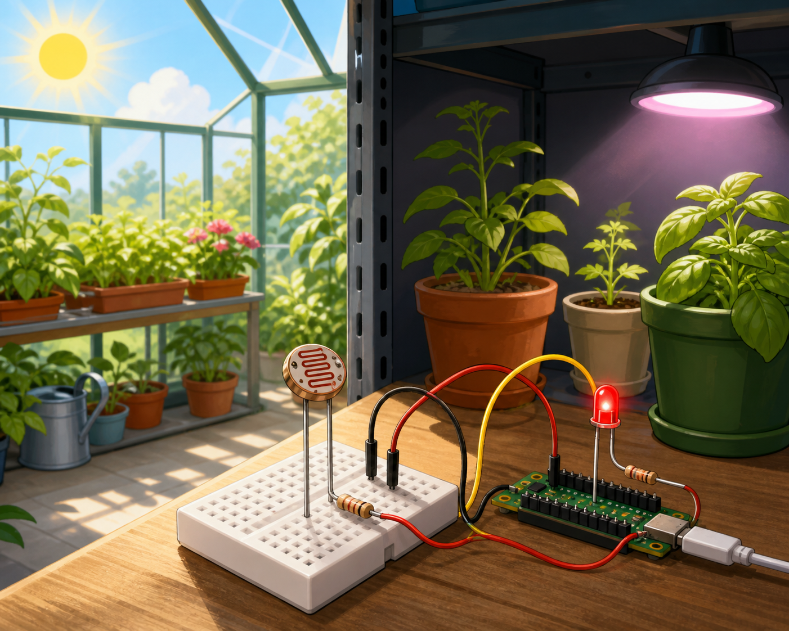

Automatic night light
DetectRoom light level
→
DecideRoom is dark
→
DoTurn on lamp
An LDR is a light sensor that tells your project how bright or dark it is.
LDR stands for light dependent resistor. Its resistance changes when more or less light falls on the sensor face.
Your projects can use an LDR to react to sunshine, shadows, daylight, or darkness.


from gpiozero import LightSensor
ldr = LightSensor(18)
brightness = ldr.valuefrom machine import ADC, Pin
ldr = ADC(Pin(26))
brightness = ldr.read_u16()brightness later in your Decide code to react to light or darkness. On Raspberry Pi, LightSensor uses an LDR and a capacitor. On Pico, use the LDR in a voltage divider with a fixed resistor.